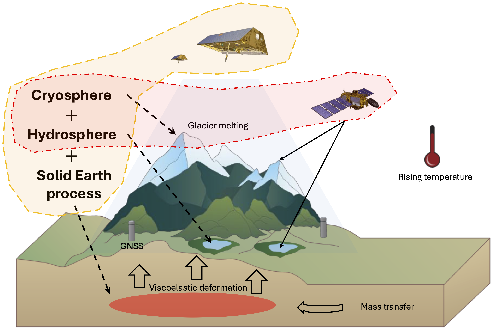
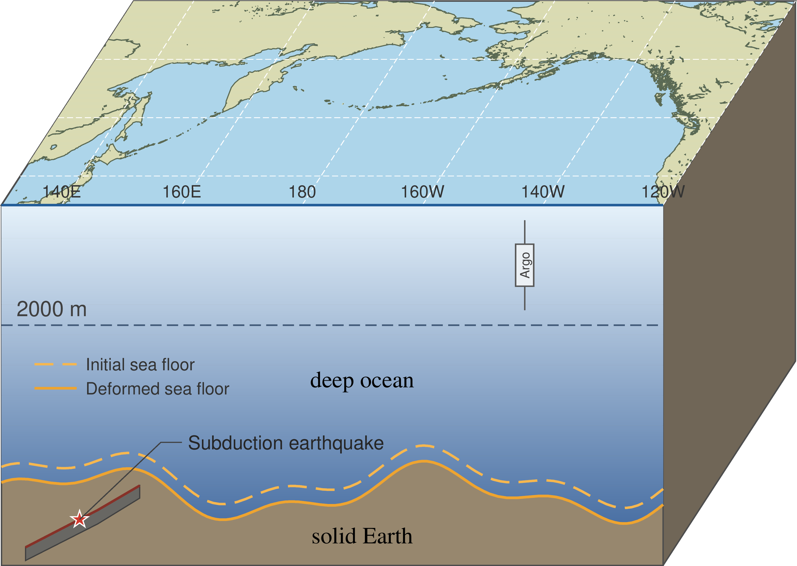
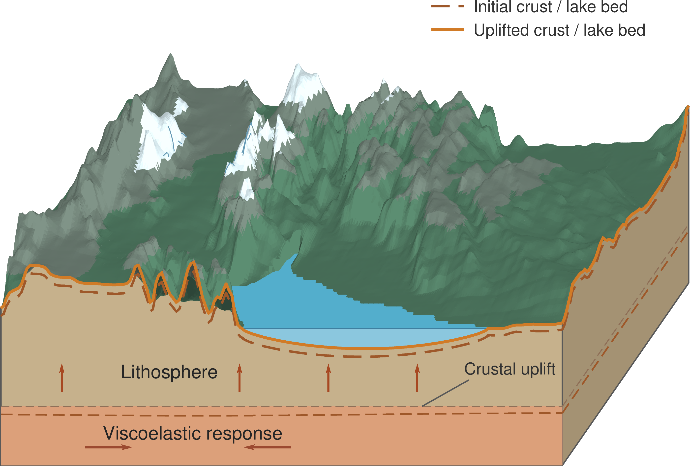

Solid Earth Deformation
Elastic and viscoelastic responses to changes in ice and water loading.
Research interests span satellite geodesy, regional sea level budgets, glacier and lake mass balance, and the interactions between surface mass redistribution and the solid Earth.
I study how water and ice mass changes interact with the solid Earth and influence geodetic observations. My research combines GNSS, GRACE/GRACE-FO, satellite altimetry, and geophysical modeling to investigate terrestrial water storage, glacier mass change, and regional sea level variations.
Affiliation and academic biography can be expanded here.
Elastic and viscoelastic responses to changes in ice and water loading.
Satellite altimetry, ocean mass, steric changes, and seafloor deformation.
Glacier change, lake water storage, and mass-budget closure in changing environments.
GNSS and GRACE-based estimates of terrestrial water storage variability.
Selected research on the interactions among the solid Earth, cryosphere, hydrosphere, and ocean. Click any figure to view it at full resolution.

Satellite gravimetry captures not only glacier mass change but also lake water storage and the response of the solid Earth. This work investigates their combined effects on long-term and seasonal mass estimates.

Combining lake observations, GRACE gravimetry, hydrological data, and geophysical modeling to quantify regional water depletion and investigate how the solid Earth influences the observed mass budget.

Integrating satellite altimetry, GRACE/GRACE-FO, ocean steric observations, and seafloor deformation to better understand regional sea level changes and possible budget discrepancies.

Investigating the relationship between terrestrial water storage changes and vertical crustal displacement using GNSS observations, satellite gravimetry, and surface-loading models.
Publication titles, journal details, DOI links, and downloadable PDFs will be added here.
Separating glacier mass change, lake storage variability, and deformation effects.
Understanding regional sea level components and the role of ocean-bottom deformation.
Linking regional water-storage decline with gravity observations and solid Earth response.
Exploring water storage changes and their geodetic signatures.